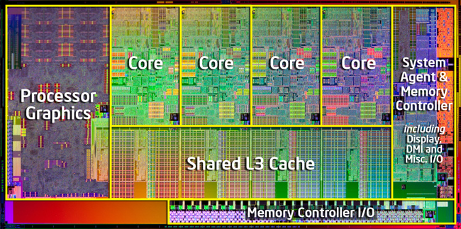
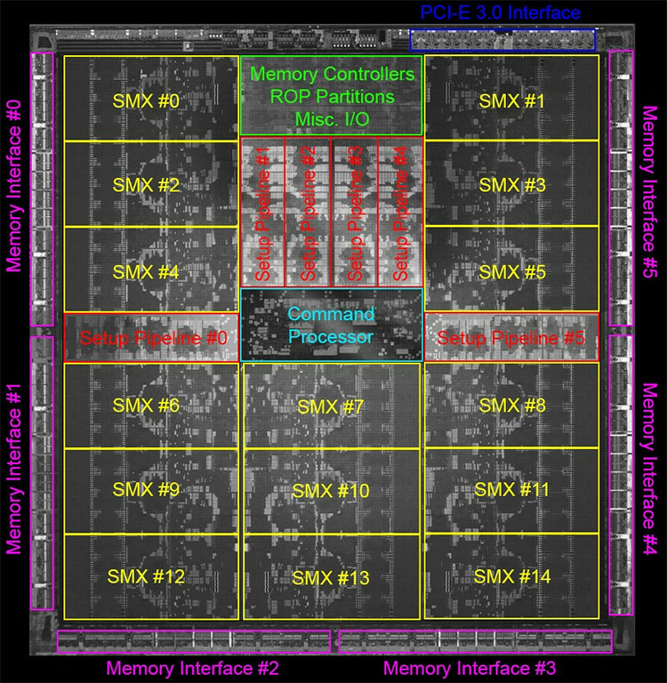
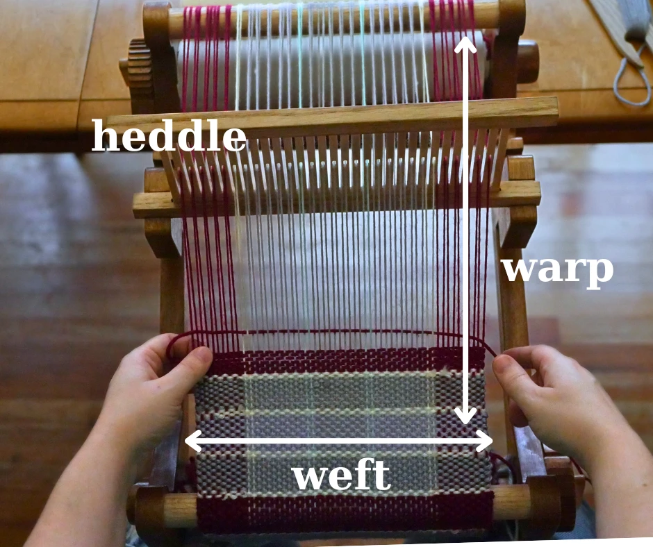
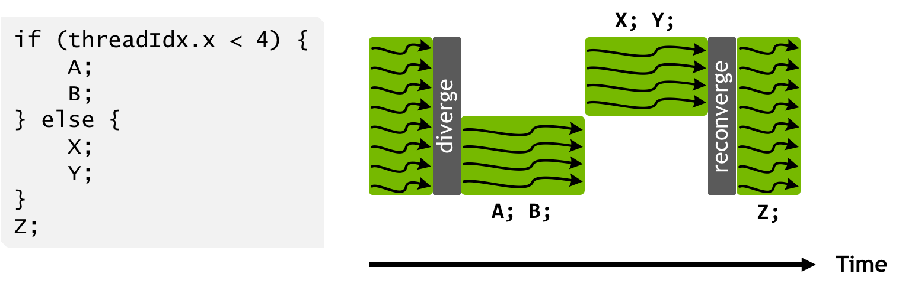

function serialpi(n)
inside = 0
for i in 1:n
x, y = rand(), rand()
inside += (x^2 + y^2 <= 1)
end
return 4 * inside / n
endserialpi (generic function with 1 method)2025-04-22



15 SMX multiproc.s
x 6 warps
x 32 threads each
= 2880 threads
Warps: similar to SIMD unit with branching, but executs only ONE instruction

Check your GPU with nvidia-smi.
using CUDA: rand as curand
function findpi_gpu(n)
4 * sum(curand(Float64, n).^2 .+ curand(Float64, n).^2 .<= 1) / n
endfindpi_gpu (generic function with 1 method)To go deeper: CUDAnative.jl

using Flux, CUDA
using Flux: setup, update!, DataLoader, onehotbatch, onecold, logitcrossentropy, gradient
function loader(data=train_data; bsize=64)
x4dim = reshape(data.features, 28,28,1,:)
yhot = onehotbatch(data.targets, 0:9)
DataLoader((x4dim, yhot); batchsize=bsize, shuffle=true)
endloader (generic function with 2 methods)Chain( Conv((5, 5), 1 => 6, relu), # 156 parameters MaxPool((2, 2)), Conv((5, 5), 6 => 16, relu), # 2_416 parameters MaxPool((2, 2)), Flux.flatten, Dense(256 => 120, relu), # 30_840 parameters Dense(120 => 84, relu), # 10_164 parameters Dense(84 => 10), # 850 parameters ) # Total: 10 arrays, 44_426 parameters, 174.344 KiB.
using .Iterators: take
for epoch in 1:settings.epochs
batches = loader(train_data;
bsize=settings.bsize)
batchnum = length(batches)
subset = take(batches, batchnum÷10)
@time for (x,y) in subset
gr = gradient(lenet) do m
logitcrossentropy(m(x), y)
end
update!(opt_state, lenet, gr[1])
end
acc = accuracy(lenet)
t_acc = accuracy(lenet, test_data)
@info "logging:" epoch acc t_acc
end26.093149 seconds (51.02 M allocations: 3.009 GiB, 1.91% gc time, 117.91% compilation time) ┌ Info: logging: │ epoch = 1 │ acc = 58.13 └ t_acc = 57.96 1.560349 seconds (45.97 k allocations: 547.540 MiB, 15.29% gc time) ┌ Info: logging: │ epoch = 2 │ acc = 75.07 └ t_acc = 76.22 1.366371 seconds (45.97 k allocations: 547.540 MiB, 6.00% gc time) ┌ Info: logging: │ epoch = 3 │ acc = 85.13 └ t_acc = 85.98 1.542984 seconds (45.97 k allocations: 547.539 MiB, 18.48% gc time) ┌ Info: logging: │ epoch = 4 │ acc = 88.73 └ t_acc = 89.41 1.519118 seconds (45.97 k allocations: 547.541 MiB, 16.08% gc time) ┌ Info: logging: │ epoch = 5 │ acc = 89.86 └ t_acc = 90.76 1.261975 seconds (45.97 k allocations: 547.539 MiB, 2.98% gc time) ┌ Info: logging: │ epoch = 6 │ acc = 90.38 └ t_acc = 91.18 1.611528 seconds (45.97 k allocations: 547.539 MiB, 18.32% gc time) ┌ Info: logging: │ epoch = 7 │ acc = 91.53 └ t_acc = 92.06 1.570849 seconds (45.97 k allocations: 547.539 MiB, 15.45% gc time) ┌ Info: logging: │ epoch = 8 │ acc = 91.49 └ t_acc = 92.11 1.583757 seconds (45.97 k allocations: 547.539 MiB, 15.82% gc time) ┌ Info: logging: │ epoch = 9 │ acc = 92.15 └ t_acc = 92.75 1.624690 seconds (45.97 k allocations: 547.539 MiB, 15.69% gc time) ┌ Info: logging: │ epoch = 10 │ acc = 93.0 └ t_acc = 93.45
gpuloader (generic function with 2 methods)Chain( Conv((5, 5), 1 => 6, relu), # 156 parameters MaxPool((2, 2)), Conv((5, 5), 6 => 16, relu), # 2_416 parameters MaxPool((2, 2)), Flux.flatten, Dense(256 => 120, relu), # 30_840 parameters Dense(120 => 84, relu), # 10_164 parameters Dense(84 => 10), # 850 parameters ) # Total: 10 arrays, 44_426 parameters, 1.859 KiB.
g_opt = setup(opt_rule, glenet);
for epoch in 1:settings.epochs
gbatches = gpuloader(train_data;
bsize=settings.bsize)
@time for (x,y) in gbatches
gr = gradient(glenet) do m
logitcrossentropy(m(x), y)
end
update!(g_opt, glenet, gr[1])
end
acc = g_acc(glenet)
t_acc = g_acc(glenet, test_data)
@info "logging:" epoch acc t_acc
end24.718749 seconds (42.98 M allocations: 2.249 GiB, 1.64% gc time, 78.80% compilation time: <1% of which was recompilation) ┌ Info: logging: │ epoch = 1 │ acc = 95.41 └ t_acc = 95.75 1.371044 seconds (3.81 M allocations: 323.853 MiB, 4.96% gc time) ┌ Info: logging: │ epoch = 2 │ acc = 96.22 └ t_acc = 96.49 1.369233 seconds (3.81 M allocations: 323.853 MiB, 6.89% gc time) ┌ Info: logging: │ epoch = 3 │ acc = 96.64 └ t_acc = 96.98 1.335291 seconds (3.81 M allocations: 323.853 MiB, 6.40% gc time) ┌ Info: logging: │ epoch = 4 │ acc = 97.18 └ t_acc = 97.41 1.334213 seconds (3.81 M allocations: 323.853 MiB, 6.27% gc time) ┌ Info: logging: │ epoch = 5 │ acc = 96.93 └ t_acc = 96.97 1.336956 seconds (3.81 M allocations: 323.853 MiB, 6.21% gc time) ┌ Info: logging: │ epoch = 6 │ acc = 97.28 └ t_acc = 97.51 1.348606 seconds (3.81 M allocations: 323.853 MiB, 6.23% gc time) ┌ Info: logging: │ epoch = 7 │ acc = 97.44 └ t_acc = 97.65 1.345181 seconds (3.81 M allocations: 323.853 MiB, 6.30% gc time) ┌ Info: logging: │ epoch = 8 │ acc = 97.06 └ t_acc = 97.28 1.375541 seconds (3.81 M allocations: 323.853 MiB, 6.37% gc time) ┌ Info: logging: │ epoch = 9 │ acc = 97.62 └ t_acc = 97.74 1.379615 seconds (3.81 M allocations: 323.853 MiB, 6.90% gc time) ┌ Info: logging: │ epoch = 10 │ acc = 97.37 └ t_acc = 97.45